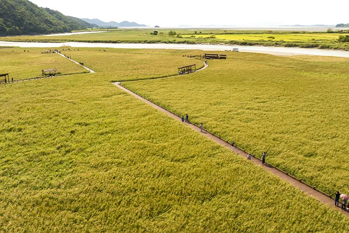
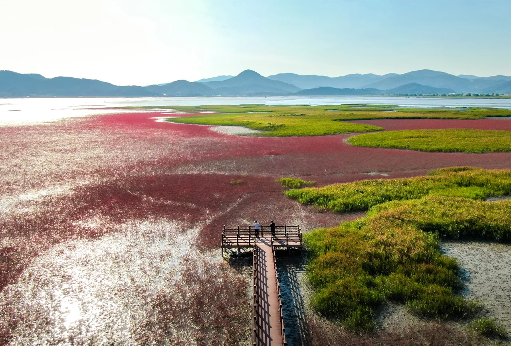
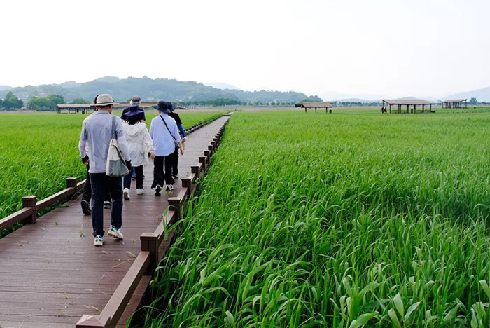
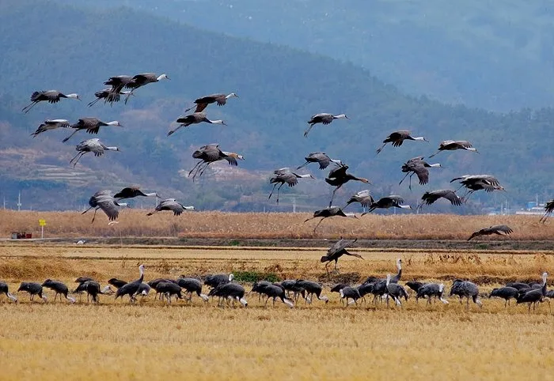

▲ 순천만습지의 S자형 수로. 용산전망대에 올라야 이 곡선이 한눈에 들어온다 ⓒ 순천시 순천만국가정원·습지
1. 표 한 장으로 두 곳을 본다
순천만국가정원과 순천만습지는 서로 연계돼 있습니다. 둘 중 어느 쪽에서 입장권을 사더라도, 같은 날에 한해 나머지 한 곳에 무료로 들어갈 수 있습니다.
표는 삼등분된 구조로, 양 끝을 뜯어 각 시설 입구에서 확인하는 방식입니다. 국가정원 쪽 매표소에서 표를 샀다면 그 표를 그대로 들고 습지 쪽 입구로 가면 됩니다. 반대 방향도 마찬가지입니다.

▲ 순천만습지 갈대밭. 국가정원과 습지는 표 한 장으로 오가는 하나의 관광권역이다 ⓒ 순천시 순천만국가정원·습지
| 구분 | 요금 | 비고 |
|---|---|---|
| 성인 | 10,000원 | - |
| 청소년 · 군인 | 7,000원 | - |
| 어린이 | 5,000원 | - |
| 6세 이하 · 65세 이상 | 무료 | - |
야간 입장은 주간 요금의 절반입니다. 정확한 야간 개장 시각과 요금 변동은 방문 전 홈페이지에서 확인하는 편이 안전합니다.
2. 습지와 정원 사이, 스카이큐브
습지와 정원은 걸어서도 이동할 수 있지만, 거리가 있어 무인 궤도차 스카이큐브를 많이 이용합니다. 왕복 8,000원, 편도 6,000원이고 국가정원 쪽에서만 승차권을 구매할 수 있습니다.
매주 월요일은 스카이큐브 휴무일입니다. 월요일이 공휴일과 겹치면 다음 평일로 휴무가 넘어갈 수 있어, 월요일 방문 계획이라면 미리 확인이 필요합니다.

▲ 가을이면 칠면초가 갯벌을 붉게 물들인다. 탐방로는 이 붉은 습지 사이를 가로지른다 ⓒ 순천시 순천만국가정원·습지
3. 용산전망대 — S자 수로를 보려면 30분을 걸어야 한다
순천만습지 하면 떠오르는 S자형 수로 사진은 용산전망대에서 찍은 것입니다. 습지 입구에서 전망대까지는 도보로 약 30분이 걸립니다.
전망대에서는 갈대밭과 칠면초 갯벌, S자 수로가 한 화면에 들어옵니다. 노을 시간대에 맞추면 수로가 주황빛으로 물듭니다. 다만 왕복 1시간 가까이 걸리는 거리이므로, 노을 시각을 미리 확인하고 역산해서 출발해야 합니다.

▲ 갈대밭 사이 탐방로. 용산전망대까지는 이 길을 따라 30분을 걸어야 한다 ⓒ 순천시 순천만국가정원·습지
4. 개장 시간은 계절마다 마지막 입장이 다르다
습지는 오전 8시에 열고 일몰과 함께 닫습니다. 문제는 '일몰'이 계절마다 다르다는 점이고, 그래서 마지막 입장 시각도 달마다 따로 정해져 있습니다.
| 시기 | 마지막 입장 |
|---|---|
| 1월, 10~12월 | 오후 5시 |
| 2월 | 오후 5시 30분 |
| 3월, 9월 | 오후 6시 |
| 4월 | 오후 6시 30분 |
| 5~8월 | 오후 7시 |
겨울에 오후 늦게 도착하면 용산전망대까지 왕복할 시간이 부족할 수 있습니다. 마지막 입장 시각과 왕복 30분을 함께 계산해야 헛걸음을 피할 수 있습니다.

▲ 겨울철 순천만습지는 흑두루미를 비롯한 철새 도래지로도 알려져 있다 ⓒ 순천시 순천만국가정원·습지
5. 자차 여행자를 위한 정리
첫째, 표는 한 곳에서만 사십시오. 국가정원이든 습지든 먼저 도착하는 쪽에서 사면 다른 쪽은 당일 무료입니다.
둘째, 스카이큐브를 탈 계획이라면 승차권은 국가정원 쪽에서 미리 구매하십시오. 습지 쪽에서는 판매하지 않습니다.
셋째, 용산전망대는 왕복 1시간 코스로 계산하십시오. 노을을 보려면 마지막 입장 시각에서 최소 1시간을 거꾸로 계산해 출발해야 합니다.
넷째, 겨울 방문이라면 오후 5시 마지막 입장을 특히 주의하십시오. 다른 계절보다 훨씬 이르게 문이 닫힙니다.
정리하면 이렇습니다. 순천만은 표 한 장으로 두 곳을 도는 구조라 값 자체는 합리적입니다. 다만 그 표를 어디서 사고, 전망대까지 얼마나 걸리는지를 미리 계산해 두지 않으면 노을 시간을 놓치기 쉽습니다.